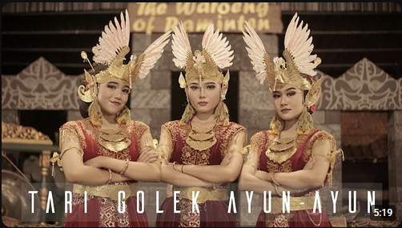
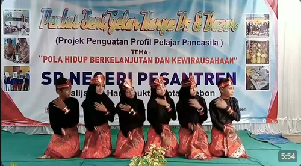

Materi Pembelajaran

Tari Jaipong
Definisi: Tari Jaipong adalah tarian tradisional dari Jawa Barat yang dikenal dengan gerakan yang energik, lincah, dan penuh semangat.

Tari Golek
Definisi: Tari Golek adalah tarian klasik dari Yogyakarta yang menggambarkan kelembutan dan keanggunan wanita Jawa.

Tari Saman
Definisi: Tari Saman adalah tarian tradisional dari suku Gayo di Aceh yang ditampilkan oleh sekelompok penari duduk berjejer dan menampilkan gerakan cepat dan kompak.